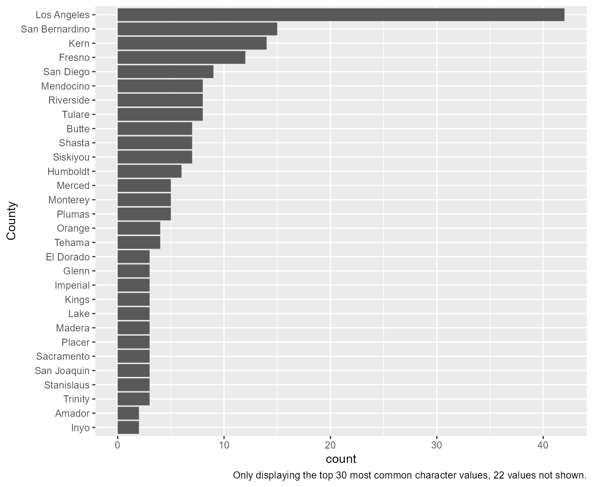
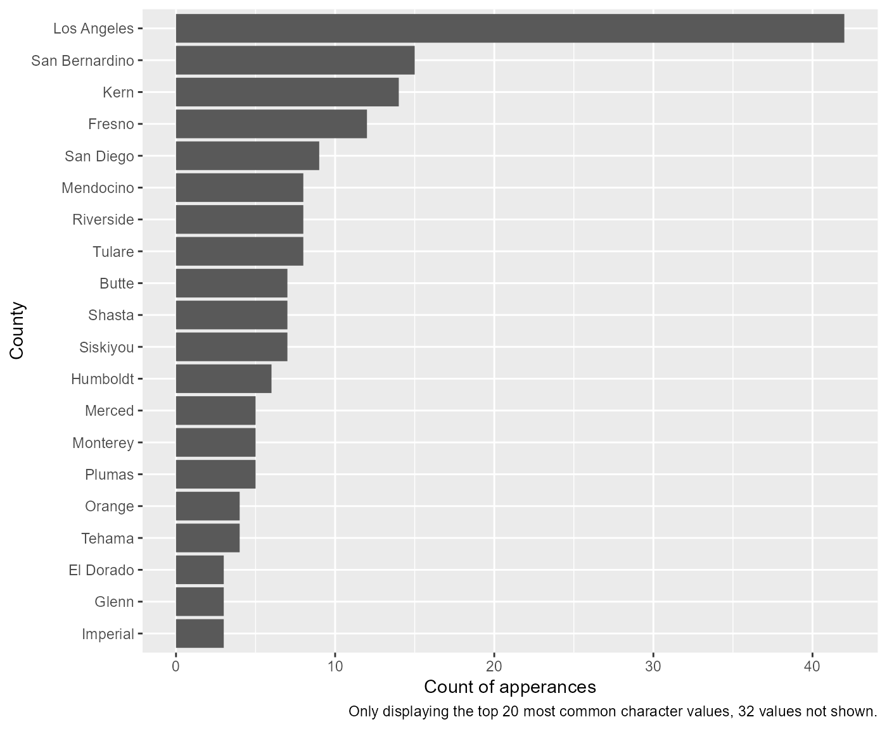
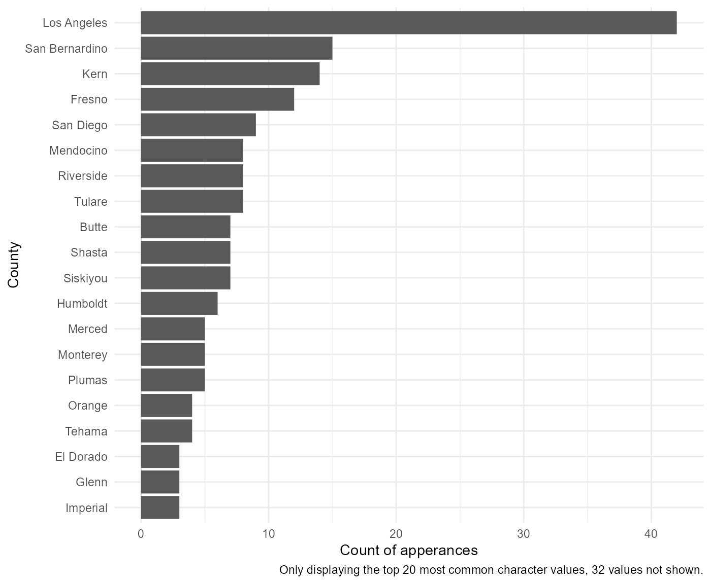
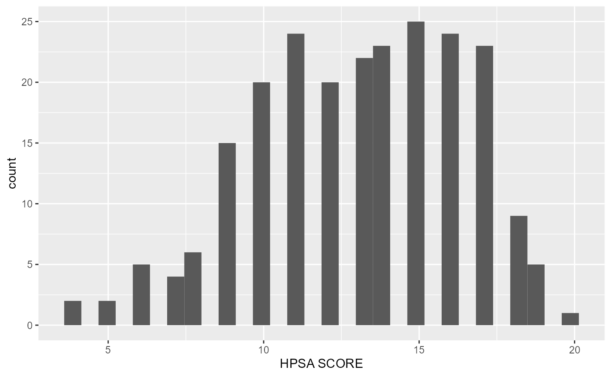
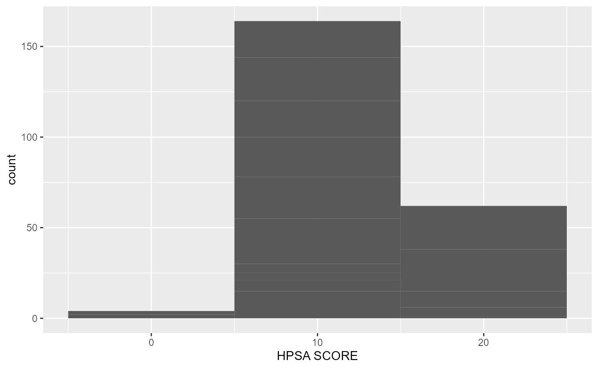
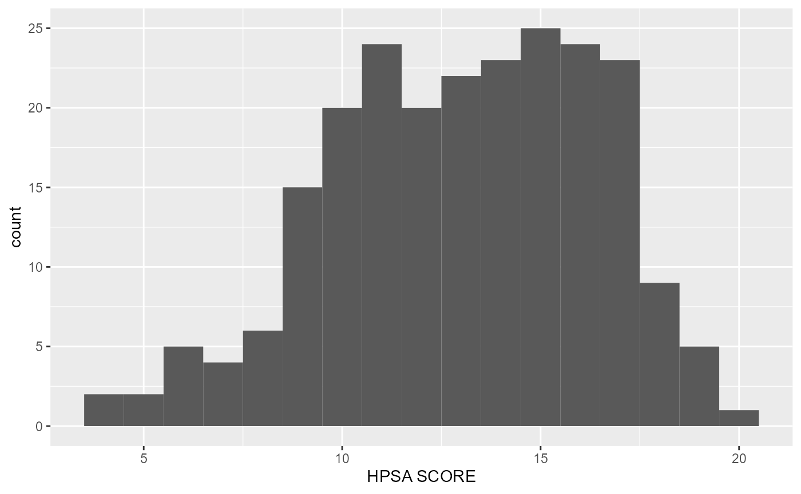
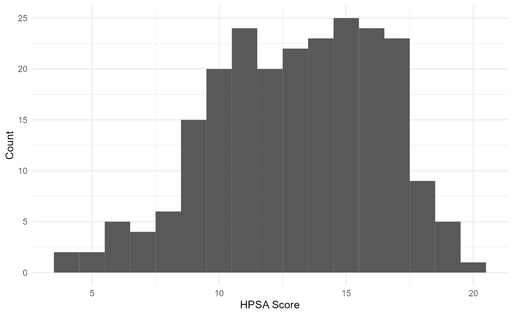

In effort to support data exploration and codebook making, the
library also contains functions to generate single variable descriptive
graphs based on a variable’s class. For example, take the
County_Equivalent_Name variable from the
hpsa_primarycare data set, which is a character. By passing
this data set and variable to the visualize_sngl_var() we
get a graph with bars presenting the count of each variable. More
specifically, the function takes unsummarized data and returns
summarized scores where each observation contributes to one unit of
height for each bar. Lastly, in the example below, we set the
flip argument to TRUE in order to pivot the
graph on its x-axis.
rcahelpr::visualize_sngl_var(df = rcahelpr::hpsa_primarycare,
var = "County_Equivalent_Name",
xlab = "County",
flip = TRUE)
In the prior example, the df, var, and
xlab arguments are requirements, the rest are optional.
Among other optional features is the ability to change the y-axis labels
and setting a cuttoff for larger data somewhat easily:
rcahelpr::visualize_sngl_var(df = rcahelpr::hpsa_primarycare,
var = "County_Equivalent_Name",
xlab = "County",
flip = TRUE,
ylab = "Count of apperances",
cutoff = 20)
Another optional feature is the ability to pass the function custom ggplot themes:
my_theme <- ggplot2::theme_minimal()
rcahelpr::visualize_sngl_var(df = rcahelpr::hpsa_primarycare,
var = "County_Equivalent_Name",
xlab = "County",
flip = TRUE,
ylab = "Count of apperances",
cutoff = 20,
theme = my_theme)
Note that the function automatically adapts to working with numeric variables:
rcahelpr::visualize_sngl_var(df = rcahelpr::hpsa_primarycare,
var = "HPSA_Score",
xlab = "HPSA SCORE")
Under the hood, the function acknowledges that the declared variable
is continues and proceeds to generate a histogram, which bins the data,
then counts the number of observations in each bin. You can control the
width of the bins with the binwidth argument. It is very
important to experiment with the bin width. The default just splits your
data into 30 bins, which is unlikely to be the best choice. You should
always try many bin widths, and you may find you need multiple bin
widths to tell the full story of your data. For example:
rcahelpr::visualize_sngl_var(df = rcahelpr::hpsa_primarycare,
var = "HPSA_Score",
xlab = "HPSA SCORE",
binwidth = 10)
Or:
rcahelpr::visualize_sngl_var(df = rcahelpr::hpsa_primarycare,
var = "HPSA_Score",
xlab = "HPSA SCORE",
binwidth = 1)
Out of the two experiments above, it appears that a
binwidth of 1 fits the data a little nicer. Let’s polish
this graph up a little like we did above:
rcahelpr::visualize_sngl_var(df = rcahelpr::hpsa_primarycare,
var = "HPSA_Score",
xlab = "HPSA Score",
ylab = "Count",
binwidth = 1,
theme = my_theme)